<website id="illustrator html/css js" date="may2020-may2021"/>
As a lead web developer of the MCC MediaLab Team in NYU Steinhardt, my responsibilities included coming up with new webpage formats, weekly web maintenance, ensuring compability of new webpages with the site's architecture, UX assessments, and accessibility check for WCAG compliance. Scroll to read about the archive and other projects I created ith my teammates.
 see the website >
see the website >
Designed, prototyped, and developed by me, the MediaLab Archive hosts amazing digital work by students across our department. Taking initiative of reviving this format after our annual mediaWorks_ showcase got canceled, I was presented with a unique challenge of preserving foundations of the Lab's brand while pioneering a new format and visual aesthetic.
Creative considerations
It was important to establish continuity with the main website's look and feel to communicate our missions of openness and accessibility. At the same time, to increase the archive's popularity as an inspiration tool and spark our students' imagination, I worked on a new experiential strategy.
The format
When choosing the form of presenting students' work, the following factors had to be considered:
- The number of projects (we knew that we would have to build the initial version with a few projects until we got more submissions)
- Timeline vs. no timeline
- Distribution based on a course projects were made in (this feature was later substituted with filters)
Inspirations:
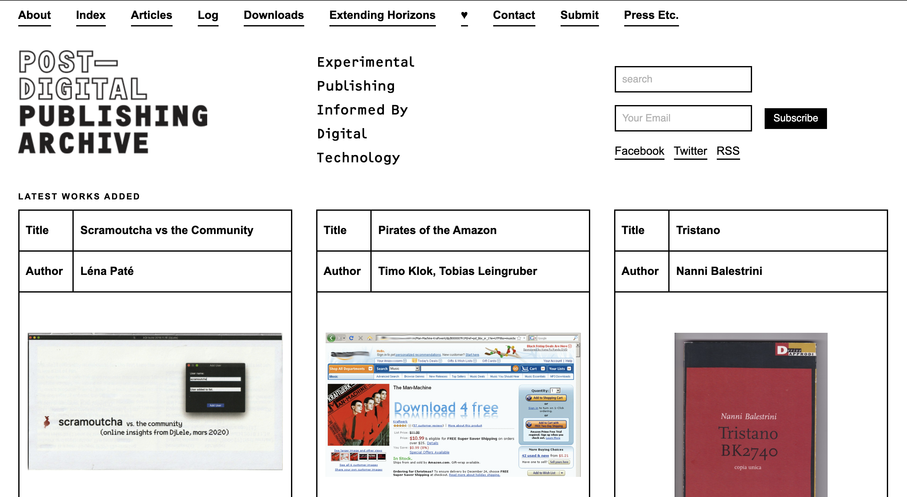
Post-Digital Publishing Archive
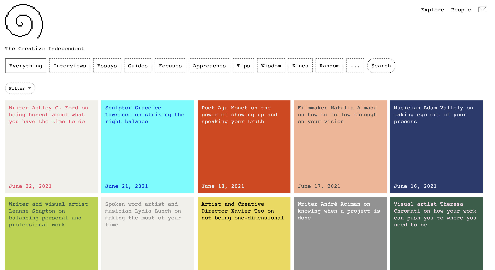
The Creative Independent
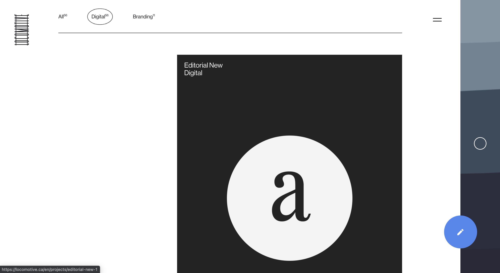
Locomotive
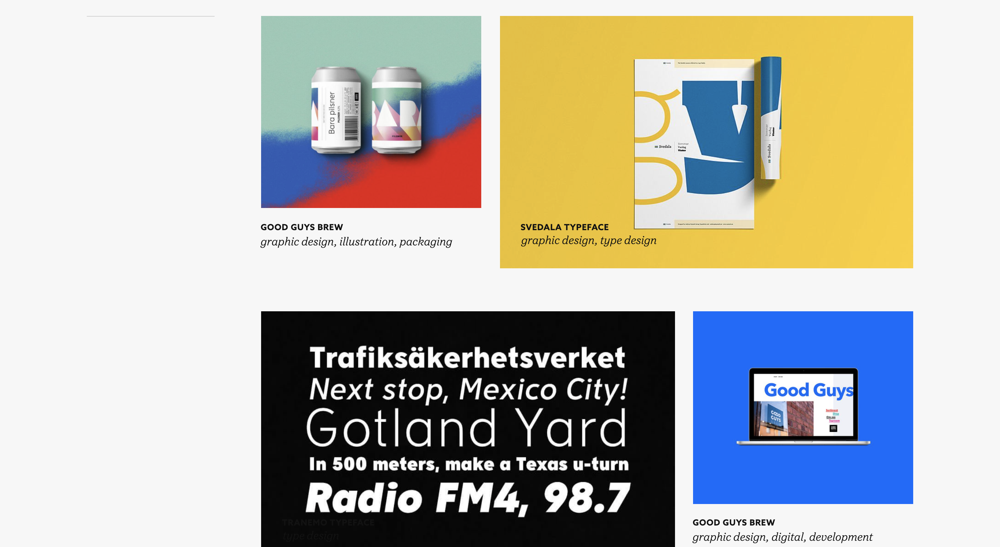
Nymark
User research
From the UX perspective, we separated archive users into 3 categories:
- Those who came to find a particular project from a friend/family member.
- Those who take a practice-based course in the department and came to find reference for their own projects.
- Those who are getting acquainted with the Lab/the Media department, and are exploring potential creative directions.
The features
It became readily apparent that for the 2nd and 3rd categories of users it was crucial to access each project quickly and preview details before "commiting" to one.
- In desktop version, a hover interaction was added to display relevant project details. 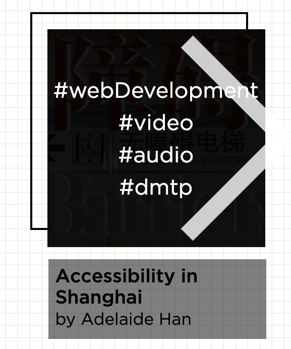
- Each project description shows up on-click (JS event listener) on the same page, helping the user avoid loading times and jump between projects seemlessly.
Another key addition were search filters, especially for users from 1st and 2nd categories to help them easily locate particular projects (i.e., of their classmates). A JavaScript-based filtering system was developed:
- Filters are separated into two categories: a course where the project was made and the type of media it belongs to. 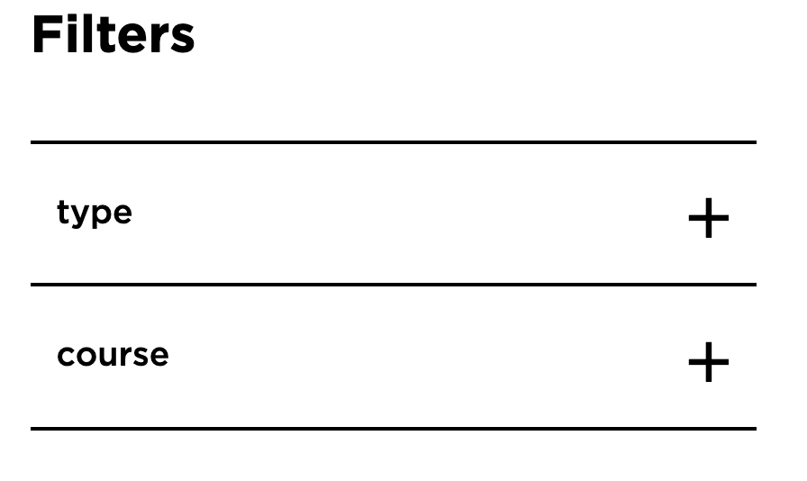
- Filters are additive – projects that belong to any of selected categories are shown, rather than projects that satisfy all filters. This was done knowing that our user base needs to see projects from multiple courses at once.
- When a filter is selected, a small 'x' sign appears next to it which makes it easy to deselect. 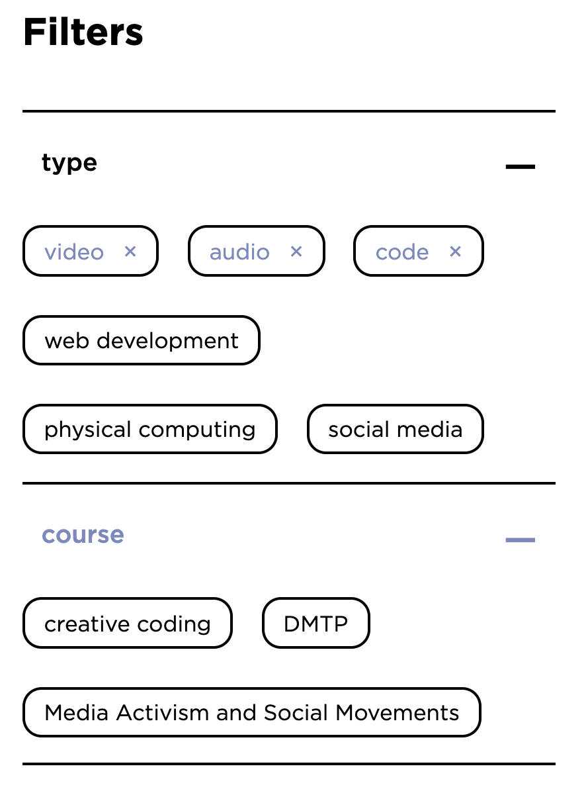
- The JS mechanic used to operate filters is the data- property attached to each project that gets compared to a filter's class when it is clicked. 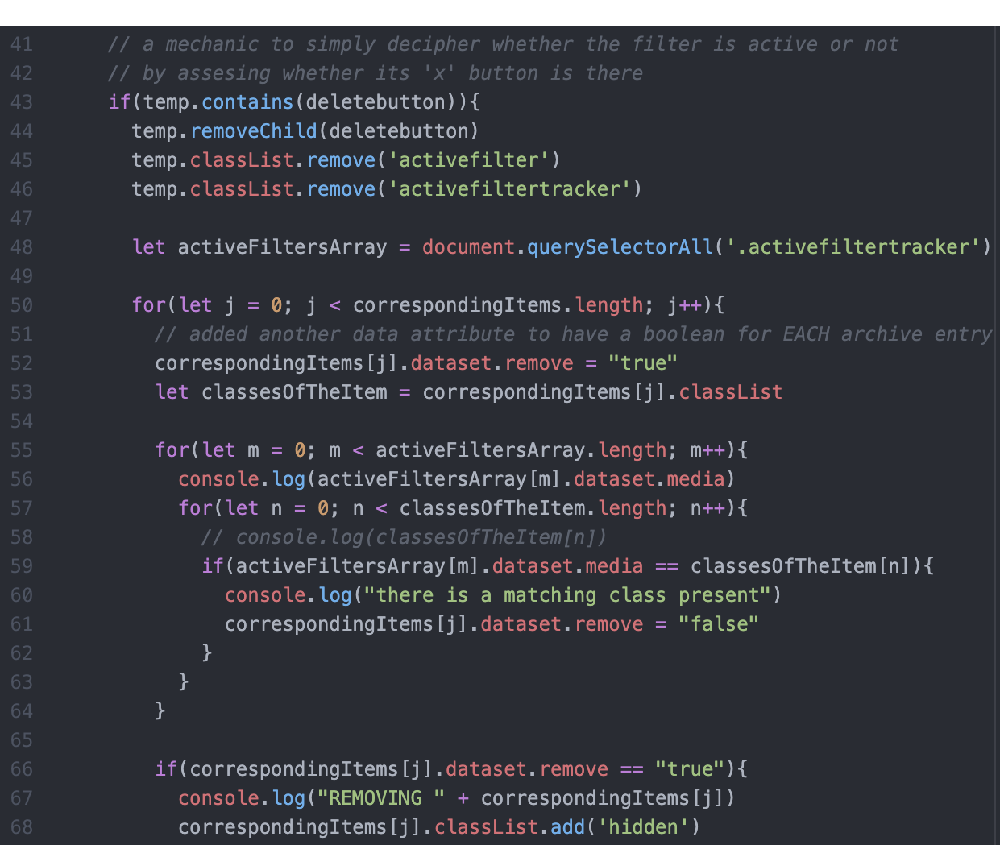
Visual aesthetic
The product's look and feel match the rest of the website but have some unique recognizable features. For example, the "graph paper" background is meant to invoke thoughts about design process and prototyping. The shape of each project's card is intentionally geometric and simple, and a square "shadow" resembles the Lab's logo.
Design iterations:
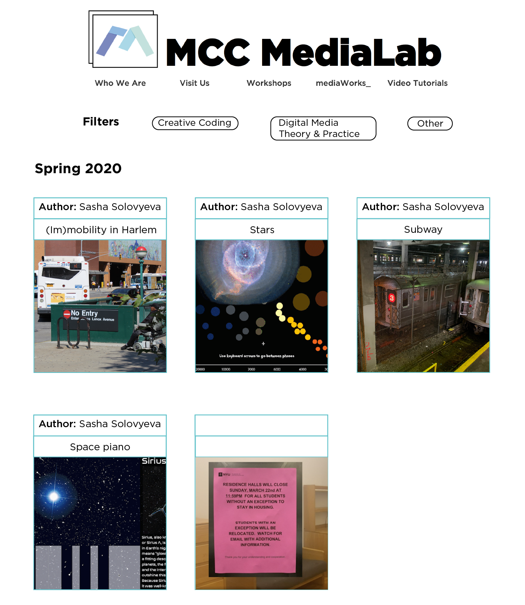
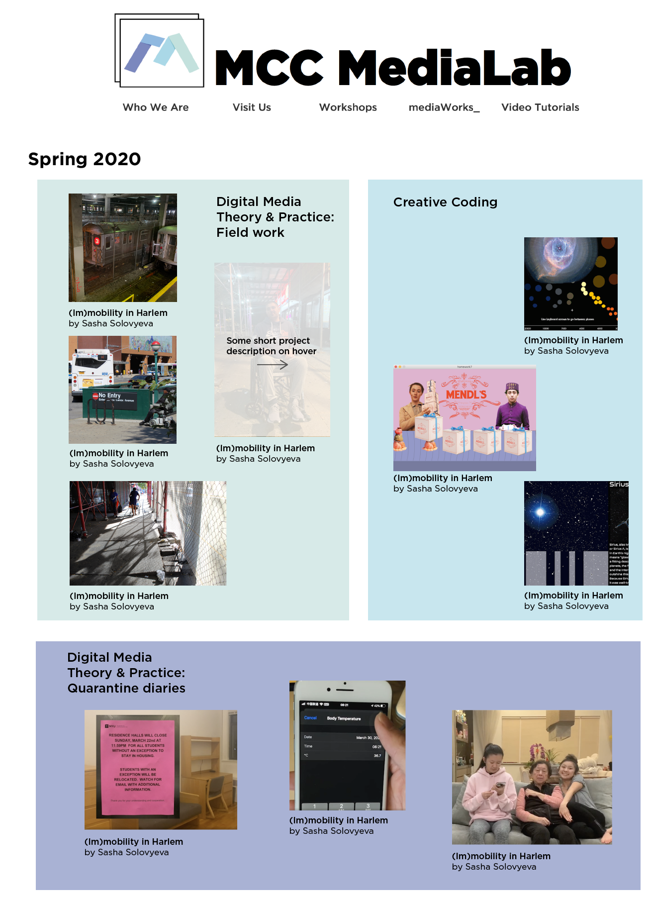
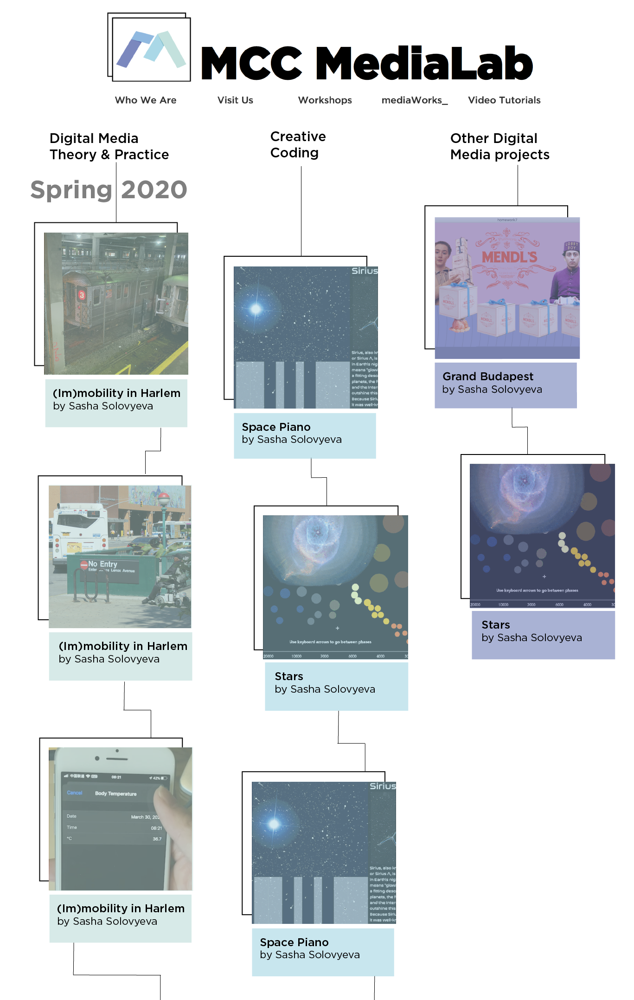
More MediaLab work
 see the website >
see the website >
A team effort of building a quick, well-designed, clean, and efficient Lab website that serves the entire MCC department. My main role in the Agile cycle was helping adapt our designers' vision into code and ensuring accessibility per WCAG standards. I developed index, Lab Hours, Video Tutorials, Practice Guides, mediaWorks, un(making), and Archive pages and regularly maintained the entire site.
 see the page >
see the page >
A "special edition" page with engaging CSS animations for the MediaLab's program that created digital media making spaces for BIPOC students. I worked with a designer on our team to help her understand possibilities of the web format and adapt her vision of this event's promotion into code.
 see the website >
see the website >
I co-designed and fully developed this website that serves students taking a Digital Media Theory and Practice course.
 see the page >
see the page >
I came up with a new format for this page to publish software tutorials that the Team (including myself) wrote. I designed the page to look like a library catalogue, and I coded it with JavaScript.